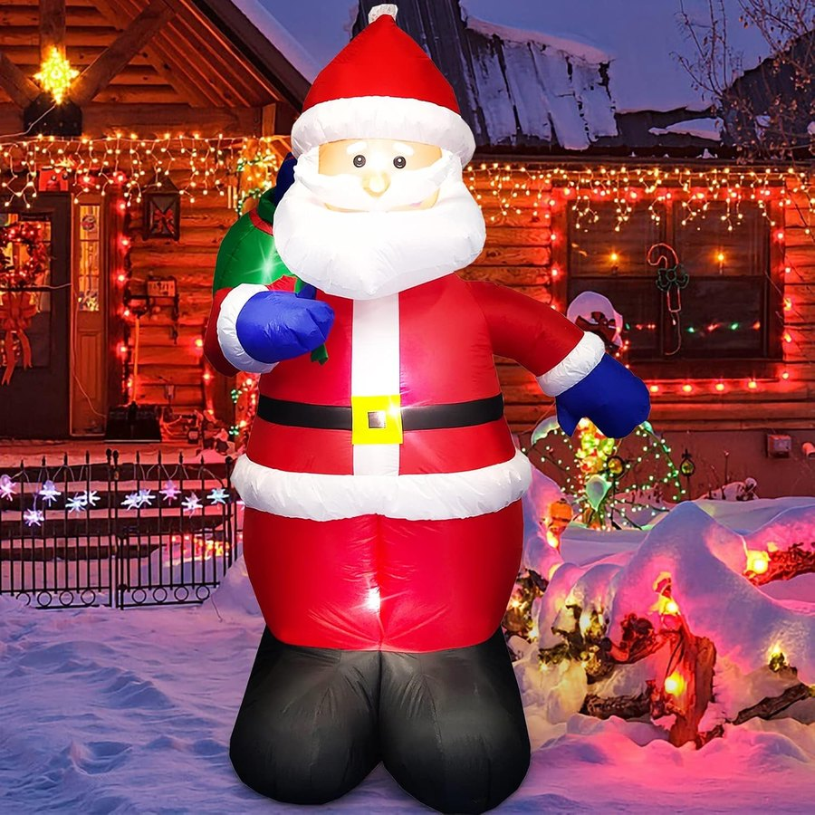

Danxilu, Papá Noel hinchable de 150 cm
Un Papá Noel hinchable de 150 cm, con saco de regalos y luces LED de color rojo y verde, según la ficha. Se infla al enchufarlo: el fabricante resume el montaje en desplegar, cerrar, enchufar y listo, y dice que se pliega hasta un tamaño de caja de zapatos, con caja de almacenaje incluida. El tejido declarado es poliéster 210T, con costuras reforzadas y un sistema de triple anclaje para viento, lluvia o nieve. No declara un grado IP concreto, así que no lo damos por equivalente a una figura IP44. Lo vende Matalavery, con envíos de Amazon. Entrega anunciada el viernes 20 de noviembre. Valoraciones: 4,6 sobre 5, a partir de 1.061 opiniones.
32,39 €Amazon.es · vendido por Matalavery y enviado por Amazon · entrega anunciada el viernes 20 de noviembre · en stock
150 cm, poliéster 210T, luces LED rojo y verde, se infla al enchufarlo, triple anclaje, caja de almacenaje. Sin grado IP declarado.